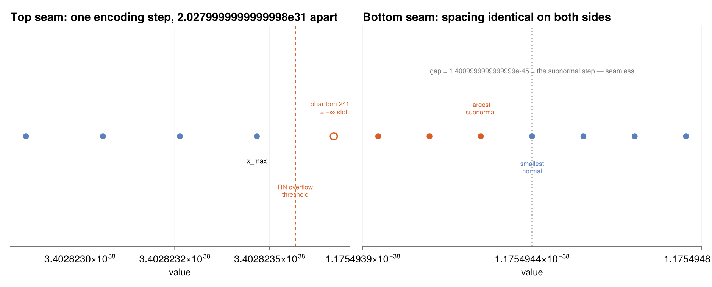

Conversions
Every scheme is a round trip of three maps — an encoder into the representation, a compute step inside it, and a decoder back — and should be judged on nothing but the end-to-end comparison against the true real-number result.
This framing exposes one structural fact all the schemes share: loss, if any, has a location.
| Scheme | Where value is destroyed |
|---|---|
| FP32 | a little at encode, then again at every operation |
| RR4 / carry-save | only at encode (the fixed-point grid); computes exactly forever after |
| MXFP4 | its entire, much larger loss at the encoder; exact thereafter |
| CSD | nowhere — it re-spells rather than approximates (constants only) |
Decoders are exact in every scheme: leaving a representation costs circuitry, never accuracy.
Format to format
xpuFP.narrow — Function
narrow(to::FloatFormat, from::FloatFormat, x) -> NamedTupleA traced narrowing conversion (FP32 → BF16, FP32 → E2M1, …), reporting where the value landed and why.
FP32 → BF16 is the extreme case: BF16 is simply FP32 with the bottom 16 fraction bits chopped off, so the exponent — and therefore the range — is untouched and all the loss is precision.
Returned fields: value, exact, relerror, overflowed, underflowed, became_subnormal, round_ulps.
julia> r = narrow(BF16, FP32, 3.14159);
julia> r.value, round(r.relerror, sigdigits=3)
(3.140625, 0.00296)
julia> narrow(FP16, FP32, 1.0e30).overflowed
truexpuFP.int_to_float — Function
int_to_float(f::FloatFormat, n::Integer; width=32) -> NamedTupleThe int → float conversion, traced the way hardware performs it: a count-leading- zeros to find the exponent, a shift into the significand window, and one rounding.
The exponent is found without any logarithm: the position of the top set bit is the exponent, e = (width−1) − CLZ(x) — an O(log width) binary search in gates, five levels for 32 bits.
Lossless precisely for integers below 2^(mbits+1); the first casualty for FP32 is 16_777_217.
julia> r = int_to_float(FP32, 1440);
julia> r.clz, r.exponent, r.fraction, r.exact
(21, 10, 3407872, true)
julia> string(r.code, base=16)
"44b40000"
julia> int_to_float(FP32, 16_777_217).exact
falsexpuFP.float_to_fixed — Function
float_to_fixed(fx::FixedFormat, f::FloatFormat, x) -> NamedTupleConvert a float into fixed point: scale by 2ⁿ, round, clamp. Reports whether the value saturated — the failure mode fixed point has that floating point does not.
xpuFP.fixed_to_float — Function
fixed_to_float(f::FloatFormat, fx::FixedFormat, I::Integer) -> Float64Read a stored fixed-point integer back as a float.
int → float is a count-leading-zeros, a shift, and one rounding. The exponent is found without any logarithm — the position of the top set bit is the exponent:
julia> using xpuFP
julia> r = int_to_float(FP32, 1440);
julia> r.clz, r.exponent, r.fraction, r.exact
(21, 10, 3407872, true)The monotone-encoding gift
xpuFP.nextafter — Function
nextafter(f::FloatFormat, x::Real) -> Float64The next representable value above x — implemented, as in real systems, by an integer increment of the bit pattern.
This works because FP encodings are monotone: for non-negative values a larger bit pattern always means a larger value, and one increment always means one grid step. At the bottom seam that step is a tiny 2⁻¹⁴⁹; at the top seam a gargantuan 2¹⁰⁴; but each is exactly one ulp of its own neighbourhood.
julia> nextafter(FP32, 1.0) - 1.0 == machine_eps(FP32)
true
julia> nextafter(E2M1, 2.0)
3.0xpuFP.prevafter — Function
prevafter(f::FloatFormat, x::Real) -> Float64The next representable value below x.
xpuFP.encodings_monotone — Function
encodings_monotone(f::FloatFormat) -> BoolVerify the monotonicity invariant exhaustively for a narrow format.
julia> encodings_monotone(E2M1), encodings_monotone(E4M3), encodings_monotone(FP16)
(true, true, true)FP encodings are monotone: for non-negative values a larger bit pattern always means a larger value, and one increment always means one grid step. That invariant is a gift to systems programmers — nextafter is an integer increment — and it explains both seams.
xpuFP.top_seam — Function
top_seam(f::FloatFormat) -> NamedTupleThe boundary where the normals hand over to +Inf, measured in both spaces.
In encoding space x_max and +Inf are adjacent integers. In value space the next grid point would be exactly 2^(emax+1) — but writing it needs the reserved exponent, so infinity occupies the slot of a phantom grid point one ordinary ulp above x_max. Under round-to-nearest a result need not reach that phantom point to overflow: it need only round to it, so the threshold is the midpoint.
julia> t = top_seam(FP32);
julia> t.xmax == maxfinite(FP32), t.phantom == 2.0^128
(true, true)
julia> t.overflow_threshold == 2.0^128 - 2.0^103
truexpuFP.bottom_seam — Function
bottom_seam(f::FloatFormat) -> NamedTupleThe subnormal/normal boundary. Unlike the top seam, the spacing here is identical on both sides: pinning the subnormal scale at 2^emin makes the last subnormal and the first normal exactly one subnormal step apart — the same step as every rung around them. The ladder crosses without a seam you could feel.
julia> b = bottom_seam(FP32);
julia> b.gap == minsubnormal(FP32), b.codes_differ_by == 1
(true, true)plot_seams(FP32)
At the top seam that step is a gargantuan $2^{104}$; at the bottom a tiny $2^{-149}$; but each is exactly one ulp of its own neighbourhood.
Redundant-domain conversions
xpuFP.to_carrysave — Function
to_carrysave(x::Integer) -> Tuple{Int,Int}Enter the carry-save domain: any (u, t) pair with u + t = x. The canonical entry is (x, 0); the representation is redundant, so this is a spelling.
xpuFP.from_carrysave — Function
from_carrysave(u::Integer, t::Integer) -> IntLeave the carry-save domain — the single carry-propagate addition that is the exit toll, paid once at the foot of a whole reduction tree rather than once per operand.
xpuFP.rr4_to_canonical — Function
rr4_to_canonical(sd::SignedDigits) -> Vector{Int}Convert a redundant radix-4 string back to the unique canonical {0..r−1} form — one full carry propagation, the exit CPA.
This is the toll every redundant system pays: conventional binary at the boundaries, redundancy in the interior, one conversion at each seam.
julia> rr4_to_canonical(to_rr4(49)) # 49 = 3·16 + 0·4 + 1
3-element Vector{Int64}:
1
0
3xpuFP.minimal_to_maximal — Function
minimal_to_maximal(sd::SignedDigits) -> SignedDigitsWiden a minimally-redundant {-2..2} string into the maximal {-3..3} alphabet — verbatim, since the alphabets are strictly nested. Every minimal spelling is a maximal spelling; they are different coordinate systems on the same integers.
xpuFP.maximal_to_minimal — Function
maximal_to_minimal(sd::SignedDigits) -> SignedDigitsNarrow a maximal {-3..3} string into {-2..2} under one bounded borrow pass: any ±3 becomes ∓1 with a ±1 handed one place up.
julia> sd = SignedDigits([3, 3, 1], 4, 3);
julia> m = maximal_to_minimal(sd);
julia> value(m) == value(sd), m.maxdigit
(true, 2)The alphabets are strictly nested: every minimal spelling is a maximal spelling, but not conversely. They are different coordinate systems on the same integers, and they interconvert at bounded cost, with the value invariant throughout.
The hub and its excursions
Let FP32 be the hub. Values enter it once — one half-ulp, paid at the door — and every other representation becomes an excursion: words leave, are converted into some internal format chosen on merit for one operation, and convert back before anything else sees them.
The decisive question is not "which format is best" but, per excursion: does the returning word have the same bits it would have had without the trip?
xpuFP.excursion — Function
excursion(name, hub, result, reference, truth) -> ExcursionClassify a round trip by comparing result (what the excursion returned) against reference (what the hub alone would produce) and truth (the exact answer).
xpuFP.multiplier_excursion — Function
multiplier_excursion(hub::FloatFormat, a, b) -> ExcursionThe invisible excursion: the Booth/carry-save core computes a×b exactly in its double-width register, and the single exit rounding lands bit-for-bit on the mandated result.
The report's poetic instance is 0.1f × 10f. The hub holds 0x3DCCCCCD (0.1 rounded up); the core forms 1 + 2⁻²⁶ exactly, an amount the hub cannot represent; the exit rounding snaps it to 0x3F800000 = 1.0 exactly. The error 0.1 picked up entering the hub is precisely cancelled by the rounding on the way back.
julia> e = multiplier_excursion(FP32, 0.1, 10.0);
julia> e.result, e.bits_identical, e.class
(1.0, true, INVISIBLE)xpuFP.redundant_dot_excursion — Function
redundant_dot_excursion(hub::FloatFormat, x, y) -> ExcursionThe visible-better excursion: keep the accumulator redundant across every term and round once at the exit, against the per-step hub chain that rounds N times.
The report's demonstration sums 1, 2⁻²⁵, 2⁻²⁵, 2⁻²⁵. Each grain is below the half-ulp at 1, so the per-step chain absorbs all three and returns exactly 1.0. The excursion holds 1 + 3·2⁻²⁵ exactly; the accumulated grains now total 1.5 ulps, over the threshold, and the returned word is 1 + 2⁻²³ — provably the correctly rounded true sum. Deferring the rounding did not merely save carries; it saved information.
julia> e = redundant_dot_excursion(FP32, [1.0, 2.0^-25, 2.0^-25, 2.0^-25], ones(4));
julia> e.reference == 1.0, e.result == 1.0 + 2.0^-23, e.class
(true, true, VISIBLE_BETTER)xpuFP.mx_excursion — Function
mx_excursion(hub::FloatFormat, bf::BlockFormat, x, y) -> ExcursionThe visible-worse excursion: the MXFP4 trip, returning a word measurably far from truth in exchange for 7.5× fewer bits and 144× smaller multipliers.
Invisible — take them all, unconditionally
julia> using xpuFP
julia> e = multiplier_excursion(FP32, 0.1, 10.0);
julia> e.result, e.bits_identical, e.class
(1.0, true, INVISIBLE)The hub holds 0x3DCCCCCD (0.1 rounded up); the Booth/carry-save core forms $1 + 2^{-26}$ exactly, an amount the hub cannot represent; the exit rounding snaps it to 0x3F800000 exactly. The error 0.1 picked up entering the hub is precisely cancelled by the rounding on the way back — and now you know the circuit-level reason 0.1f * 10f == 1.0f.
Visible, better
julia> using xpuFP
julia> e = redundant_dot_excursion(FP32, [1.0, 2.0^-25, 2.0^-25, 2.0^-25], ones(4));
julia> e.reference == 1.0, e.result == 1.0 + 2.0^-23, e.class
(true, true, VISIBLE_BETTER)Three sub-half-ulp grains that a per-step chain absorbs to nothing are recovered by staying redundant and rounding once. Deferring the rounding did not merely save carries; it saved information.
Deviating from reference bits is a semantics decision, not a correctness failure — and it has precedent: the FMA is exactly such an excursion, considered valuable enough that IEEE 754-2008 standardised it.
Visible, worse
The MXFP4 trip returns a word measurably far from truth in exchange for $7.5\times$ fewer bits and $144\times$ smaller multipliers. Because it begins and ends at hub words, its damage is measurable in isolation — which is precisely how one decides that GEMM operands may take this trip while the softmax may not.